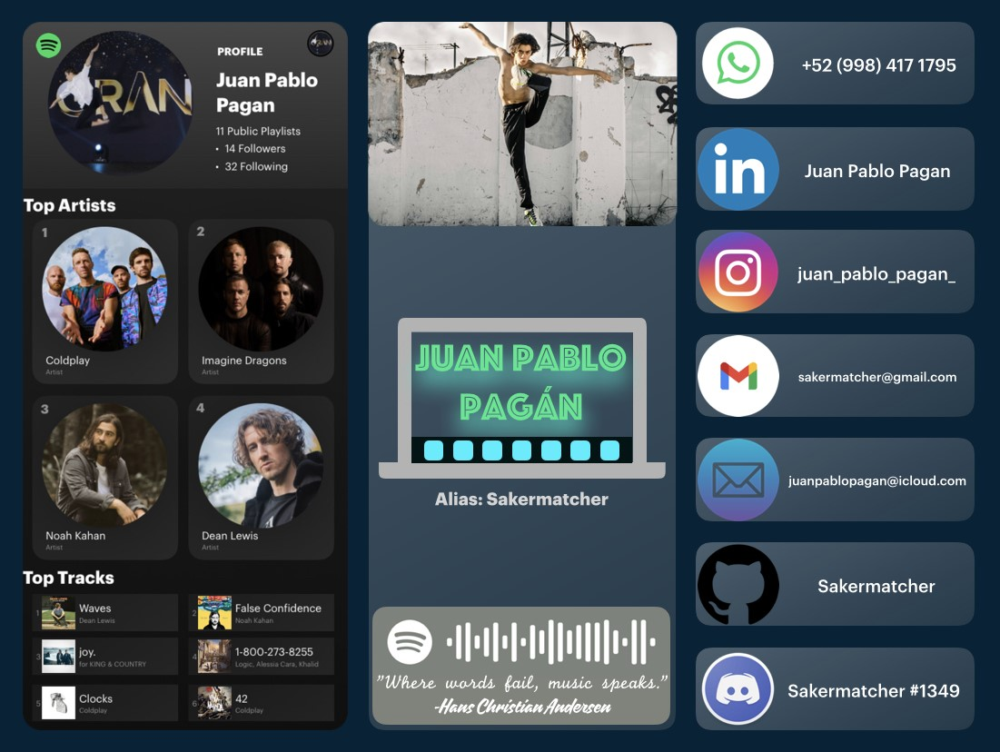
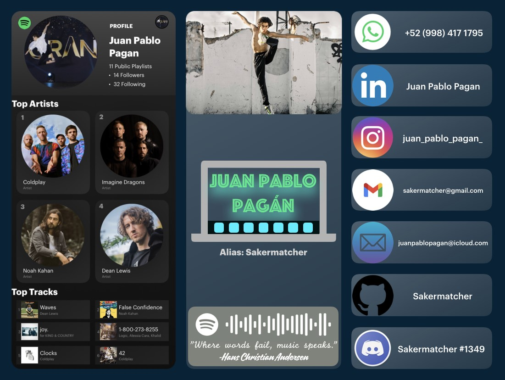
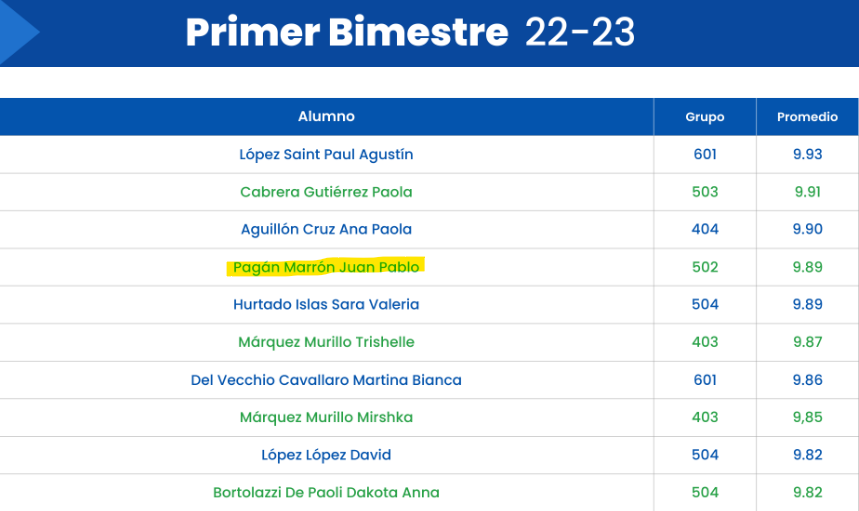
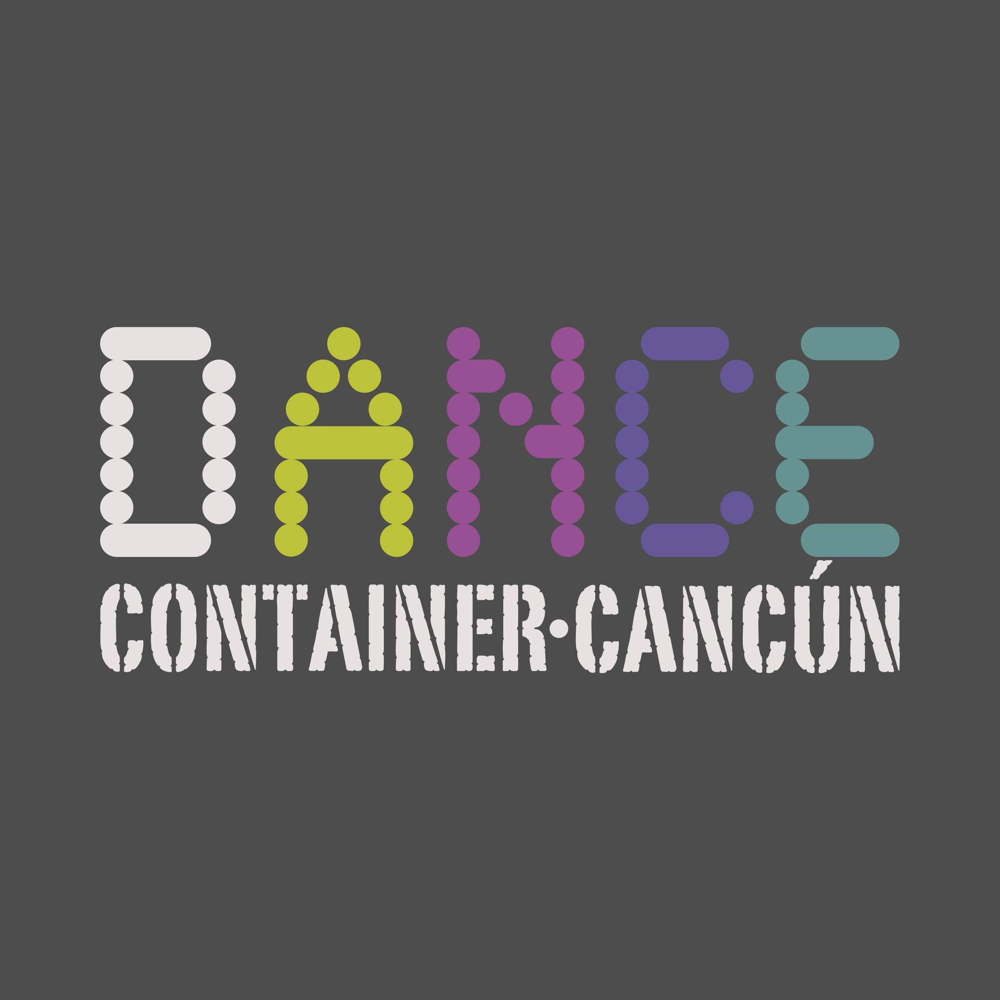

Hello!, my name is Juan Pablo Pagan Marron, born in Cancun Mexico, on the 25th of August 2005. I am currently years old, and I still live in Cancun, allthough my aim is to live in Canada as I've always been interested in cultural diversity, safety, innovation, and the rest of its benefits.
I had my middle school at “Centro Escolar Balam”. I am currently having my highschool education at CUAM Cancun, which is ranked the 14th best highschool in Mexico. I am currently 4th best student by grades in all CUAM. But (in my opinion) more importantly I have led a spotless conduct record for my whole life.
I consider myself a variated and passionate person, as an example of this I can
tell you that I have two main (and very different) passions:
-Dance: I started dancing at the age of 11, I am an intensive dancer that has much experience with Jazz,
Hip Hop, Ballet, Conthemporary, and other dance styles.
-Programming: I started programming at my 10 years of age, one example of my ability is this website,
which I made from scratch using HTML, CSS, and JS.
Now lets speak about some of my achivements:
-MUN best delegate and
honorific mention (Middle school)
-Multiple school aknowledgements for my grades
-AOTY (artist of the
year) TDR finalist
-GRAND 50% Scholarship
Even though I made this, webpages are not my specialities; Python is my
speciallity, which my engeenier uncle told me to learn before anything else, so I did and I love it, you will
find that most of my GitHub proyects are Python proyects.
In the subject of dance, I am a high performance dancer. I started with Hip Hop when I was 11, two years after that I took a summer intensive and tried Ballet and Jazz for the first time and absolutely loved it!, so I got into the classes and I got into DCC Dance Company, with whom I have assisted many courses and tournaments.
-My OCEAN Personality Test-
There are thousands of personality tests out there, but I chose to include this one because of the detail it gets into, and the very accurate depiction it has of me.
The Big Five


MY VALUES
-Diciplined and Hardworking: I will always give my 1000% in everything I do.
-Original: I always try to be different without sacrificing quality.
-Friendly: I am not one to push people apart; I will always try to unite.
-Perfectionist: I don't say something is finished until I belive it is as good as it can be, I even go as far on to redoing something because I don't think is good enough (this webpage was redone twice).
-Peaceful: I never start an argument; I stop arguments death on their tracks.
MY VISION
I have many posibilities of things I would like to do for my future:
Maybe be a game developer, I would also like to develop apps, or even become a data scientist!
To be clear anything that has to do with programming and math or phisiscs I would love. And like the saying goes; "if you work on something you like, you will not work a single day of your life".
Copyright ©JPPM/Sakermatcher | +52 (998) 417-1795 | juanpablopagan@icloud.com